왜 AI 시스템 설계인가요
발표자는 AWS(Amazon Web Services) 테크 리드 시절부터 지금 자기 회사까지 AI 직무 면접을 수백 번 봤다고 해요. 떨어지는 지원자에게는 공통점이 있어요. RAG(Retrieval-Augmented Generation), MCP(Model Context Protocol), 도구 호출이 뭔지는 알아요. 하지만 그 개념을 실제 비즈니스 문제에 적용하거나, 시스템을 프로덕션 규모로 키우려면 무엇이 필요한지는 설명하지 못해요. 발표자는 이 빈칸을 'AI 시스템 설계'라는 기술로 불러요.
그래서 영상은 다섯 층짜리 틀을 내놓아요. 슬라이드의 계단을 왼쪽 아래부터 따라가면 범위와 가정, 아키텍처, 관측 가능성, 프로덕션과 운영, 최적화 순서예요. 계단 모양이라 아래층 결정이 위층의 출발점이 된다는 뜻이 그대로 보여요.
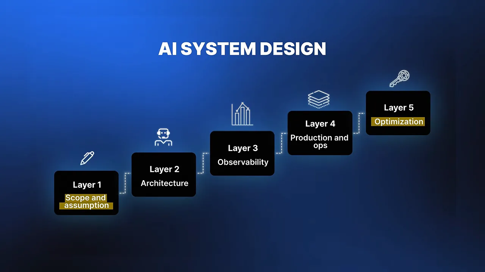
아래 그림은 층마다 발표자가 던지는 질문을 한데 모은 거예요. 영상에서는 이 질문들이 각 층을 시작할 때 따로따로 나와요. 한 장에 모아 두면 면접장에서 어떤 순서로 말을 꺼낼지 바로 보여요.
예제는 이커머스 회사의 고객 지원 에이전트예요. 오른쪽 목록 네 줄이 이 에이전트의 요구 사항이에요. 도움말 센터 질문에 답하고, 주문을 조회하고, 지원 티켓을 만들고, 확신이 없을 때 사람에게 넘겨요. 발표자는 이 중에서도 마지막 줄, 사람에게 넘기는 능력을 가장 중요하게 꼽아요.
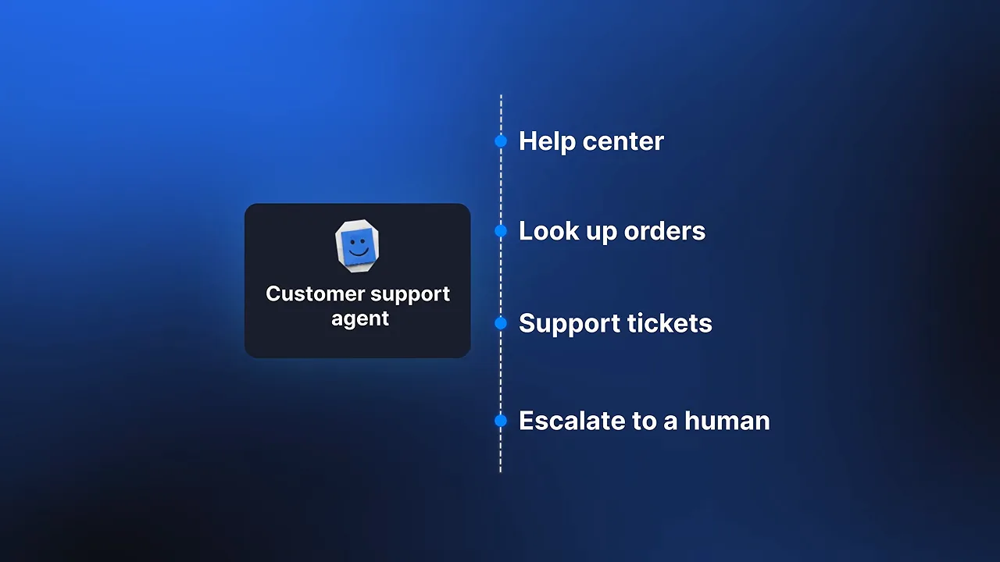
1층: 범위와 가정 정하기
초보자는 문제를 듣자마자 RAG, 모델, 도구, 에이전트, 심지어 멀티 에이전트까지 꺼내요. 발표자는 해결책을 말하기 전에 범위부터 이해하라고 해요. 시스템 설계의 큰 몫이 문제 범위를 정하고 가정을 드러내는 일이라서예요.
질문 네 개로 범위 정하기
| 질문 | 고객 지원 예제의 답 |
|---|---|
| 누가 어떤 문제를 겪나요? | 지원이 필요한 고객이에요. 요청이 대부분 반복적인데 여전히 사람이 답해요. |
| 어떤 결과를 개선하나요? | 상담원 없이 해결되는 일상 요청을 늘려요. |
| AI는 어느 부분을 맡나요? | 흔한 질문 답변, 주문 조회, 티켓 생성, 확신이 없을 때 사람에게 넘기기예요. |
| 자율성을 얼마나 주나요? | 일상 질문과 낮은 위험 행동은 스스로, 환불 같은 높은 위험 행동은 정책 검사나 사람 승인 뒤에 둬요. |
네 번째 질문은 초보자가 아예 떠올리지 못하는 부분이라고 해요. 발표자는 이걸 '에이전시–통제 트레이드오프'라고 불러요. 슬라이드의 가로축이 에이전시(자율성), 세로축이 통제예요. 왼쪽 위 '사람이 승인할 초안 쓰기'는 통제가 가장 세고, 가운데 '고객에게 바로 답하기'를 지나, 오른쪽 아래 '고객 대신 행동하기'로 갈수록 자율성은 커지고 통제는 약해져요.
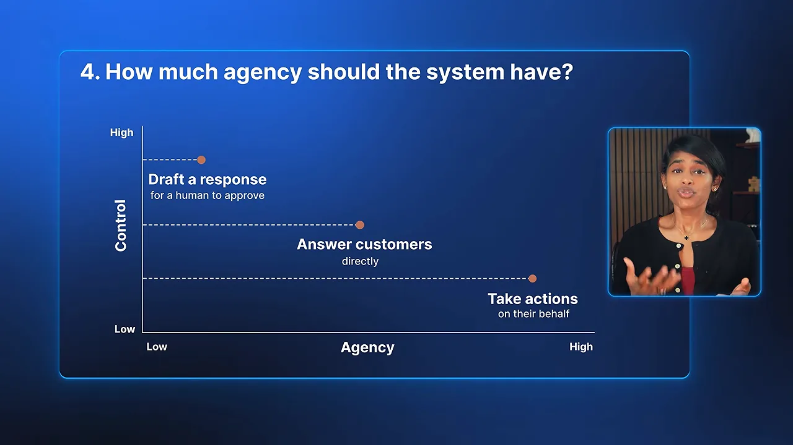
이 예제가 고른 지점은 다음 슬라이드에 두 줄로 정리돼요. 일상 질문에는 스스로 답하고 주문 조회와 티켓 생성까지는 해요. 확신이 없을 때는 사람에게 넘겨요.
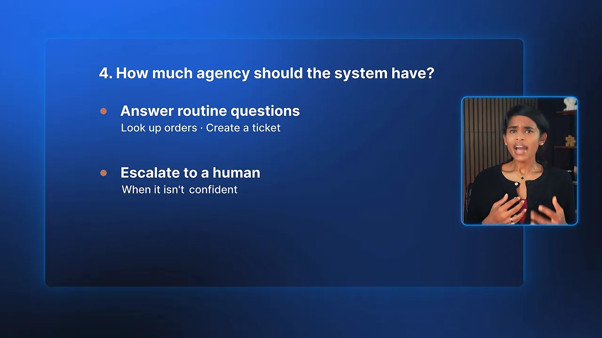
가정 네 묶음을 말로 꺼내기
범위 다음은 가정이에요. 발표자는 가정을 데이터, 입력 유형, 운영 조건, 행동 위험 네 묶음으로 나눠요. 면접이라면 여기서 면접관에게 최대한 많이 물어봐야 한다고 해요. 가정을 앞에서 분명히 할수록 머릿속에만 있는 시스템을 설계하는 일이 줄어요.
슬라이드의 네 줄을 위에서부터 읽으면 이래요. 데이터는 대부분 영어인 도움말 문서 수천 건이에요. 입력은 짧은 의미 질문과 주문 번호·에러 코드가 든 질문 두 가지예요. 운영 조건은 하루 수천 건 대화를 몇 초 안에 답하는 거예요. 행동 위험은 주문 조회는 안전하고 환불은 그렇지 않다는 거예요.
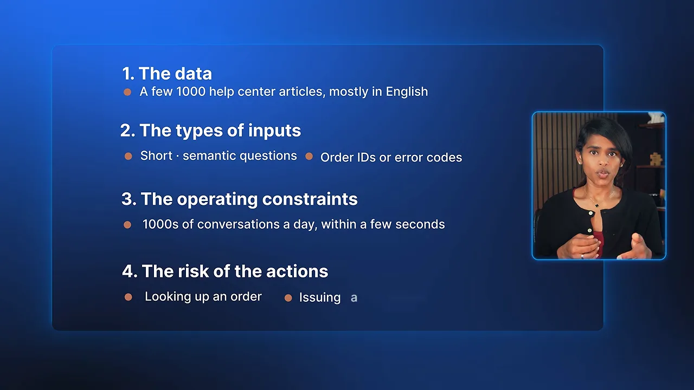
발표자는 이 가정들이 자기 제품 기준이라는 점도 짚어요. 다른 사례라면 같은 네 묶음에 그 사례의 답을 채우면 돼요.
2층 KARC ① Know: 무엇을 알아야 하나
2층은 아키텍처예요. 발표자는 직접 만든 KARC 틀로 짜요. 화면 오른쪽 세로 목록 네 줄이 그 네 글자예요. 무엇을 알아야 하는지(Know), 무엇을 할 수 있어야 하는지(Act), 무엇을 기억해야 하는지(Remember), 이 조각들을 어떻게 엮을지(Coordinate)예요. 네 답을 합치면 출발점이 되는 아키텍처가 나와요.
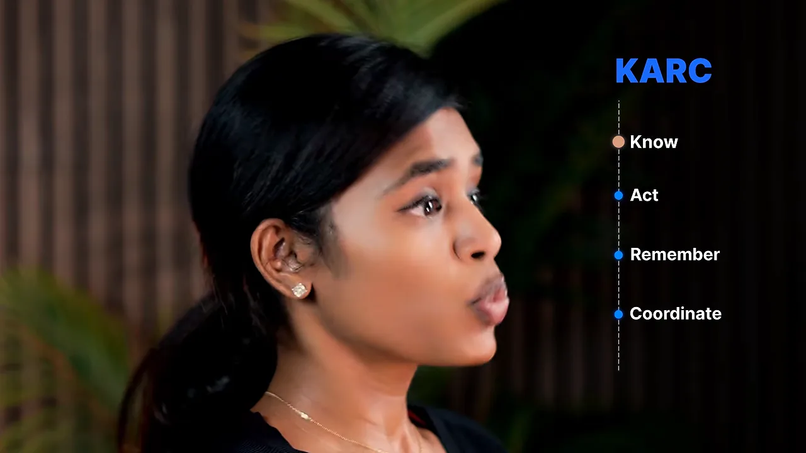
알아야 할 것은 문서 안에 있어요
에이전트가 알아야 할 정보는 반품 정책, 배송 규정, 취소 정책, 문제 해결 절차 같은 비정형 문서에 있어요. 발표자는 이걸 에이전트가 알아야 할 표준 운영 절차 묶음으로 보라고 해요. 첫 과제는 답하기 전에 맞는 정보를 찾아오는 거예요.
출발점은 단순한 RAG 파이프라인이에요. 문서를 파싱해 청크로 나누고, 임베딩을 만들어 벡터 데이터베이스에 넣어요. 여기까지는 누구나 아는 이야기예요. 차이는 그다음, 가정을 검색 설계에 반영하는 데서 나와요.
왜 하이브리드 검색인가요
가정에서 질문을 두 종류로 나눴어요. "이거 돌려보낼 수 있어요?"처럼 문서의 '반품 정책'과 단어가 다른 의미 질문에는 의미로 찾는 벡터 검색이 필요해요. SKU(Stock Keeping Unit)나 고유 ID(Identifier)가 든 질문에는 BM25(Best Matching 25) 같은 키워드 검색이 맞아요. 슬라이드는 이 두 갈래를 위아래로 그려요. 위가 '의미가 맞는 것'을 찾는 벡터 검색, 아래가 'SKU나 에러 코드'를 찾는 BM25 키워드 검색이에요. 두 결과가 가운데 하이브리드 검색으로 합쳐지고, 오른쪽 리랭크 단계가 가장 관련 있는 청크만 골라요.
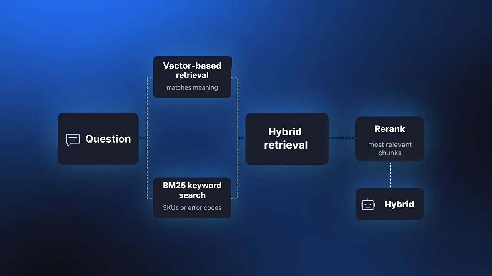
복잡한 검색은 증거가 나올 때까지 미뤄요
"문서 한 건이면 질문 하나에 답한다"는 가정 덕분에 그래프 RAG 같은 복잡한 검색 흐름은 처음부터 넣지 않아요. 슬라이드 왼쪽 '1 Article'에서 오른쪽 'Several documents'로 가는 점선 위에 'Evals later show'라고 적혀 있어요. 평가에서 여러 문서를 엮어야 하는 질문이 많다고 나와야 그 결정을 다시 연다는 뜻이에요.
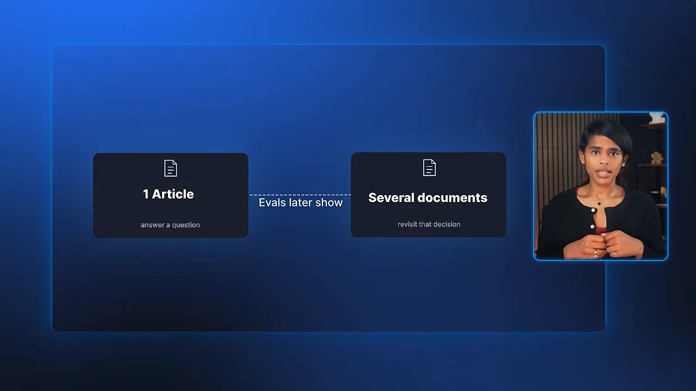
2층 KARC ② Act: 무엇을 해도 되나
KARC의 두 번째 글자 Act는 '이 시스템이 무엇을 해도 되는가'예요. 에이전트는 도구, 곧 외부 시스템과 상호작용하는 함수로 행동해요. 고객 지원 예제에는 핵심 도구 네 개가 필요해요. 주문 조회, 티켓 생성, 환불 자격 확인, 사람에게 넘기기예요.
발표자는 여기서 이름 하나를 짚어요. '환불하기'가 아니라 '환불 자격 확인'이에요. 1층에서 정한 자율성 때문이에요. 에이전트는 정보만 모으고, 높은 위험 행동은 더 강한 통제를 받아요. 아래 그림은 이 예제의 행동을 위험이 낮은 쪽과 높은 쪽으로 나눠 놓은 거예요.
도구마다 따질 네 가지
어떤 도구가 필요한지 정했으면 도구 하나하나에 네 가지를 물어요. 표로 모으면 이래요.
| 관점 | 묻는 것 | 고객 지원 예제 |
|---|---|---|
| 권한 | 꼭 필요한 접근만 주나요? | 주문 조회는 DB(Database) 읽기 권한만, 인증된 고객 본인 주문만 봐요. |
| 폭발 반경 | 잘못 동작하면 피해가 얼마나 퍼지나요? | 조회는 위험이 낮아요. 환불·취소는 결정적 정책과 사람 승인 뒤에 둬요. |
| 실패 처리 | 타임아웃이나 장애가 나면 어떻게 하나요? | 주문 조회가 계속 실패하면 정해진 횟수만 재시도하고 사람에게 넘겨요. |
| 신뢰 경계 | 무엇을 믿지 않을 데이터로 보나요? | 사용자 메시지, 검색된 문서, 도구 출력을 모두 신뢰하지 않는 데이터로 다뤄요. |
권한 슬라이드는 lookup_order 상자 하나에 'read access'라는 작은 글씨만 달아 둬요. 최소 권한이 무엇인지를 도구 하나로 보여 주는 장면이에요.
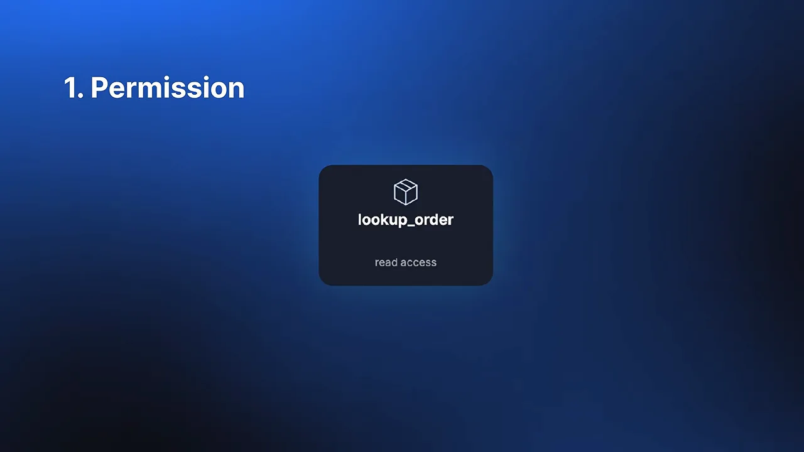
폭발 반경 슬라이드는 두 상자를 나란히 놓아요. 왼쪽 'Looking up an order' 아래에는 'pretty low risk', 오른쪽 자물쇠 아이콘이 붙은 환불·취소 상자 아래에는 'policy check or human approval'이 적혀 있어요.
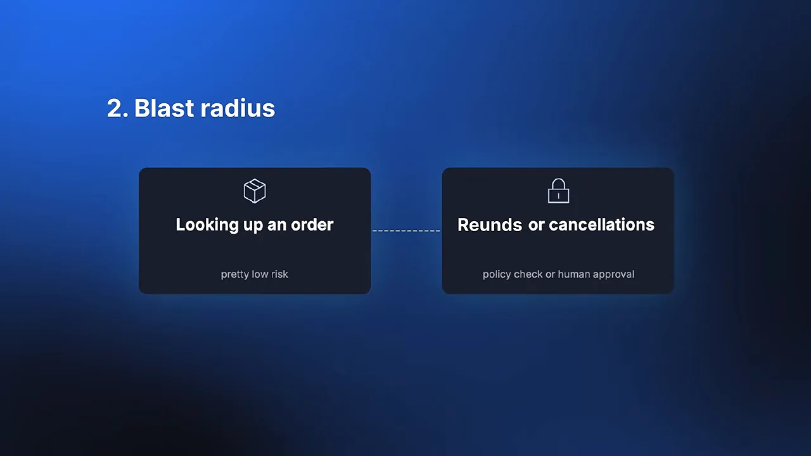
실패 처리 슬라이드에는 상자가 두 개예요. create_ticket 아래에는 '실수로 티켓 세 장을 만들지 않게', order service 아래에는 '한도 안에서 재시도, 그다음 사람에게 넘기기'라고 적혀 있어요. 말로는 주문 조회 예만 나오는데, 화면은 중복 생성 문제까지 함께 보여 줘요.
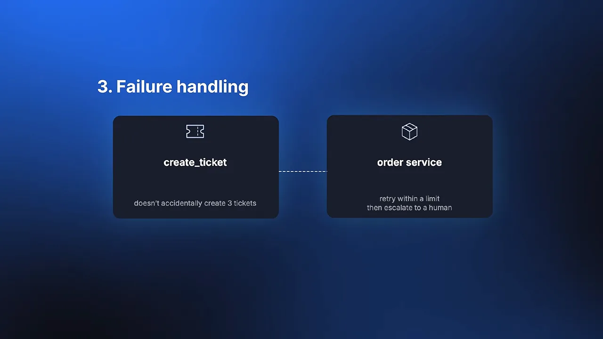
마지막 신뢰 경계는 화면 없이 말로만 나와요. 문서 안에서 지시문을 봤다고 시스템이 그대로 실행하면 안 된다는 거예요. 에이전트가 개인 데이터와 행동 도구를 함께 가진 뒤라면 특히 그래요.
2층 KARC ③ Remember·Coordinate: 기억하고 엮기
KARC의 세 번째 글자 Remember는 '무엇을 기억해야 하나'예요. AI 시스템에서는 보통 메모리라고 불러요. 발표자는 쓸모 있는 기억을 네 종류로 나누고, 각각을 이 사례에 맞춰 보라고 해요.
| 기억 종류 | 담는 것 | 고객 지원 예제에서 |
|---|---|---|
| 작업 기억 | 지금 작업에 필요한 것: 대화 이력, 검색 결과, 중간 도구 결과 | 꼭 필요해요. 지금 대화를 따라가야 하니까요. |
| 에피소드 기억 | 전에 있었던 일: 어제 문의해서 이미 넘겨짐, 환불 이력이 많음 | 유용해요. 이미 한 행동을 반복하지 않게 해요. |
| 의미 기억 | 사용자·계정에 대한 지속 사실: 선호, 고객 정보, 거래 정보 | 조금 도움이 돼요. |
| 절차 기억 | 이전 패턴이나 선호에 따라 시스템이 어떻게 행동할지 | 첫 버전에는 필요 없어요. |
요점은 넷이 있다고 다 쓰지 않는다는 거예요. 슬라이드도 결론만 남겨요. 카드 세 장 아래 작은 글씨가 각각 'clearly required', 'useful', 'might help'예요. 절차 기억 카드는 아예 빠져 있어요.
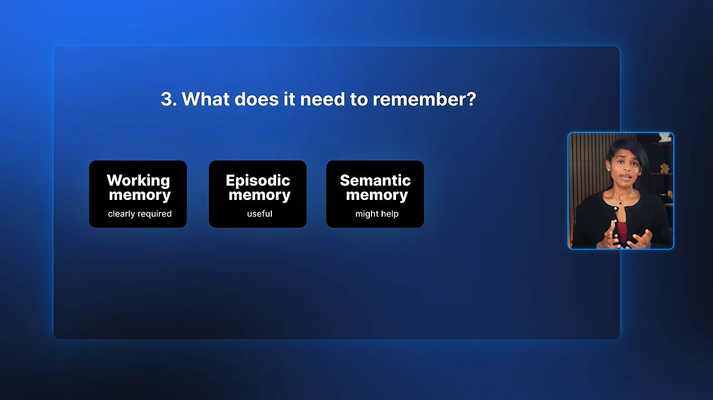
Coordinate: 단일 에이전트로 엮어요
마지막 글자 Coordinate는 지식·도구·기억이 어떻게 함께 움직이는지예요. 지금까지의 결정을 합치면 가장 단순한 출발점은 단일 에이전트예요. 하이브리드 RAG로 도움말 문서를 보고, 범위가 좁은 도구 몇 개를 쓰고, 지금 대화와 관련된 과거 행동을 기억해요.
슬라이드가 이 구조를 한 장에 그려요. 왼쪽 'Request(authenticated user)'에서 요청이 들어와요. 가운데 Agent 아래로 Knowledge, Tools, Memory 세 상자가 붙어 있어요. 오른쪽으로는 Answer, Ask for more information, Escalate to a human 세 갈래 출구가 있어요. 말로는 '도구 호출'도 출구로 꼽는데, 화면에서는 아래쪽 Tools 상자가 그 역할을 맡아요.
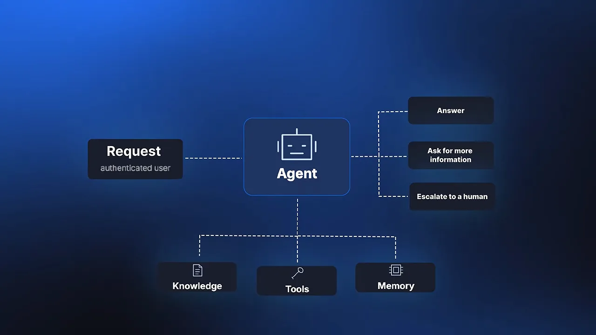
그림에 없는 규칙도 두 가지 덧붙여요. 높은 위험 행동은 정책 검사나 사람 승인을 거치라고 에이전트 프롬프트에 분명히 적어요. 그리고 전체 루프에 재시도·단계 수·타임아웃 한도를 둬서 에이전트가 끝없이 돌지 않게 해요.
3층: 관측 가능성
첫 버전을 설계했으면 그 둘레에 관측 가능성 층을 둘러야 해요. 관측 가능성은 만든 뒤 시스템이 실제로 무엇을 하는지 아는 방법이에요. 프로덕션에서 답이 나빴다는 사실만 알면 소용이 없어요. 어디서 틀어졌는지 추적하고, 다음에 고칠 만큼 정보를 가져야 해요.
슬라이드는 이 층의 결론을 상자 세 개로 먼저 보여 줘요. 무슨 일이 있었는지 로그로 남기고(Log), 시스템이 어디서 실패하는지 평가하고(Evaluate, 슬라이드 표기는 오타인 'Evalute'), 그 신호로 아키텍처를 고쳐요(Improve).
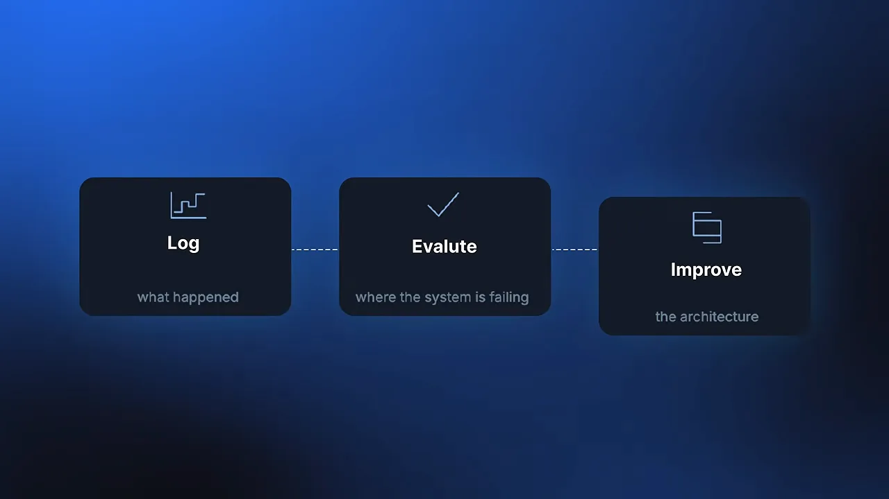
질문은 세 개예요. 무엇을 로그로 남길지, 그 위에 어떤 평가를 만들지, 어떤 평가를 온라인으로 돌리고 어떤 걸 오프라인으로 돌릴지예요. 영상은 앞의 두 질문을 자세히 다루고, 세 번째는 질문으로만 던져요.
무엇을 로그로 남기나요
큰 원칙은 모든 구성 요소의 중요한 입력·출력·결정을 남기는 거예요. 슬라이드 목록 여섯 줄이 이 예제의 답이에요. 입력, 출력, 결정, 재시도, 걸린 시간, 든 비용이에요. 말로는 더 구체적이에요. 모델에 무엇이 들어가고 나왔는지, 무엇을 검색했는지, 어떤 도구를 어떤 인자로 불렀는지까지 남겨요.
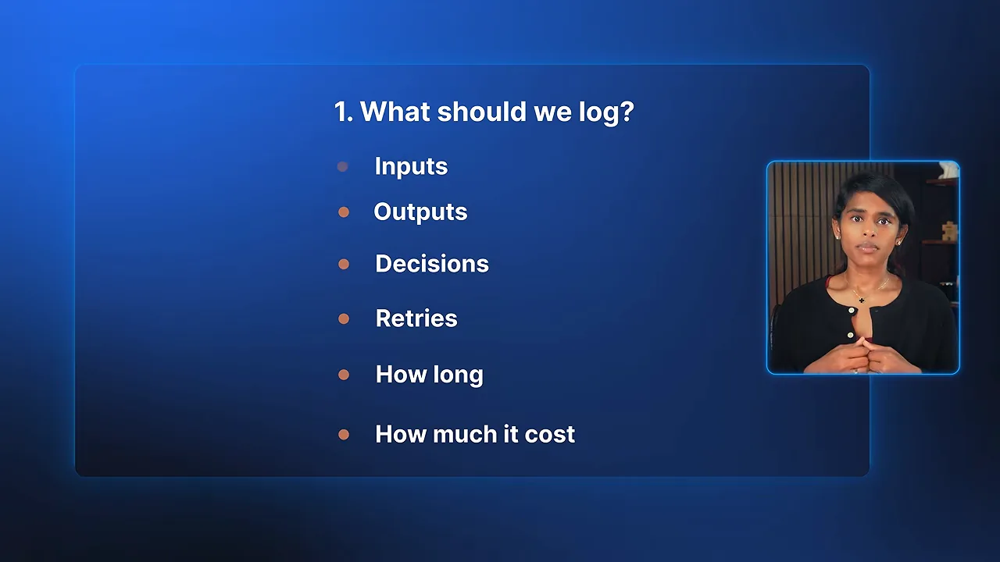
평가는 고칠 곳을 알려 줘야 해요
평가(evals)는 시스템이 특정 측면에서 얼마나 잘하는지 알려 주는 지표예요. 소프트웨어 테스트와 비슷하지만 AI 시스템에서는 방식이 조금 달라요. 발표자가 가장 강조하는 건 평가가 행동으로 이어져야 한다는 점이에요. 숫자를 보고 어디를 고칠지 알 수 있어야 해요.
지표를 고르는 방법은 아키텍처 그림의 구성 요소마다 '여기서 뭐가 틀릴 수 있나'를 묻는 거예요. 슬라이드는 Knowledge 상자에서 선을 뽑아 두 가지 실패를 달아요. 관련 없는 내용을 가져온 경우(Irrelevant context)와 필요한 정보를 놓친 경우(Missed information)예요.
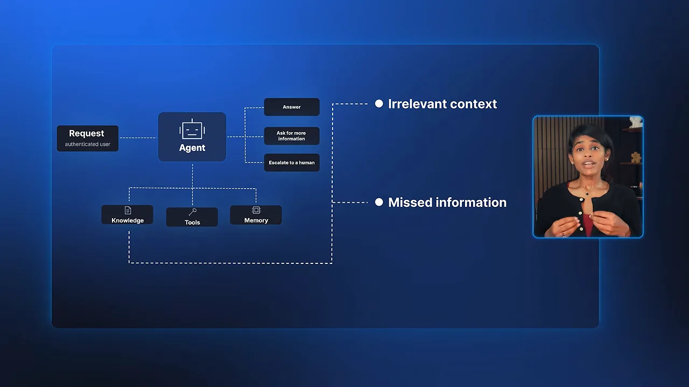
Tools 상자에서도 같은 식으로 세 갈래가 나와요. 잘못된 도구(Wrong tool)에는 도구 선택 정확도, 잘못된 인자(Passed wrong arguments)에는 인자 정확도, 도구 실패(Tool failed)에는 도구 성공률이 붙어요. 말로는 재시도율도 함께 봐요.
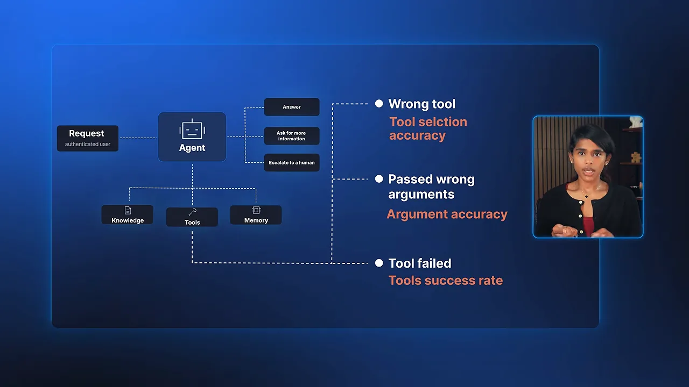
전체 흐름에서는 넘겨야 할 때 사람에게 넘겼는지, 작업이 실제로 끝났는지를 봐요. 슬라이드 네 줄은 해결률, 지연, 해결 건당 비용, 고객 만족도예요.
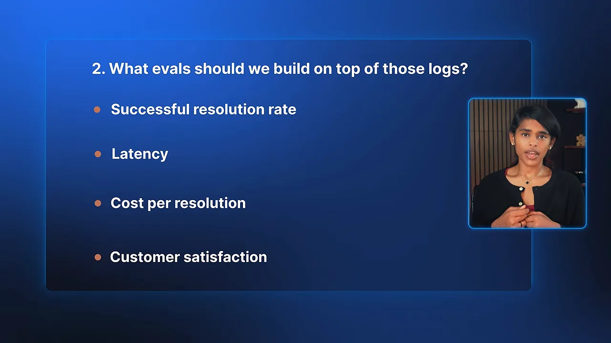
| 어디서 | 무엇이 틀릴 수 있나 | 지표 |
|---|---|---|
| 지식(검색) | 관련 없는 내용을 가져오거나 필요한 정보를 놓침 | 컨텍스트 정밀도, 컨텍스트 재현율 |
| 지식(답변) | 검색은 맞는데 답이 근거를 벗어남 | 근거성(groundedness), 충실도(faithfulness) |
| 도구 | 잘못된 도구, 잘못된 인자, 도구 실패 | 도구 선택 정확도, 인자 정확도, 도구 성공률, 재시도율 |
| 전체 흐름 | 넘길 때 안 넘김, 작업을 못 끝냄 | 해결률, 지연, 해결 건당 비용, 고객 만족도 |
코드로 채점할 것, LLM 심판에게 맡길 것
정답이 객관적인 건 코드로 확인해요. 슬라이드 위쪽 Code based Metrics 아래에 맞는 도구, 유효한 인자, 기대한 문서가 있어요. 주관적인 건 아래쪽 AI Judge가 맡아요. 답이 근거에 기댔는지, 쓸모 있는지, 사람에게 넘긴 판단이 적절했는지예요. 말로는 회사의 브랜드 말투에 맞는지도 예로 들어요. LLM 심판을 쓸 때는 좋은 채점 기준표를 함께 설계해야 한다고 해요.
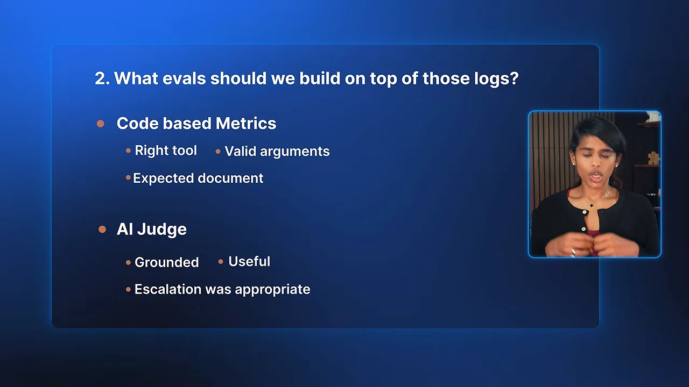
4층: 프로덕션과 운영
4층은 설계한 것을 프로덕션으로 키우는 일이에요. 발표자는 다시 1층 가정으로 돌아가 묻으라고 해요. 실제 사용자를 안정적으로 받기 시작하면 무엇이 바뀌어야 할까요. 따질 축은 규모, 지연, 신뢰성, 최신성, 보안 다섯 개예요.
규모: 무상태 서비스 여러 개
하루 수천 명을 받아야 한다는 가정이 여기서 쓰여요. 슬라이드에서 requests가 load balancer를 거쳐 agent service 세 개로 나뉘어요. 각 서비스 아래에 'stateless'라고 적혀 있고, 오른쪽 conversation state 상자 하나를 셋이 함께 써요. 대화 상태를 서비스 밖 메모리에 두니까 복제본을 늘리기만 하면 수평 확장이 돼요.
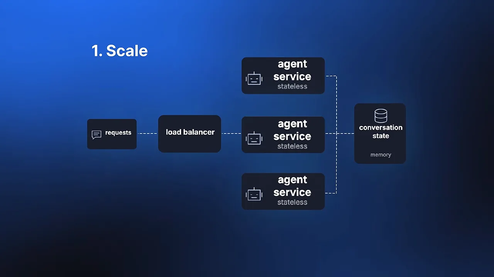
지연: 병목부터, 예산을 나눠서
3층에서 단계별 시간을 로그로 남겨 뒀어요. 그 기록으로 병목을 찾아요. 전체 지연 예산을 정해 구성 요소별로 나누고, 가장 느린 단계부터 고쳐요. 슬라이드의 막대가 그 예예요. 'Order lookup' 한 단계가 3~5초를 차지하면 거기부터 손대요. 느린 의존성 하나가 요청 전체를 붙잡지 않게 타임아웃도 둬요.
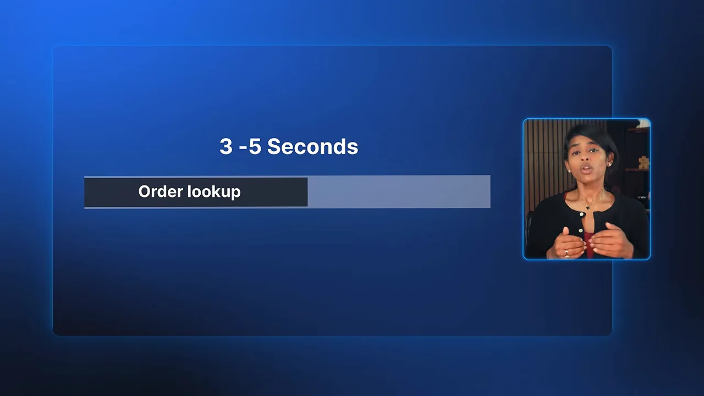
신뢰성: 재시도, 대체 경로, 큐
재시도, 대체 경로, 큐, 우아한 성능 저하를 미리 설계해요. 도구가 잠깐 실패하면 한도 안에서 재시도하고, 계속 실패하면 사람에게 넘겨요. 슬라이드는 그중 큐만 따로 그려요. 트래픽이 몰리면(Traffic spikes) 요청을 큐에 쌓아요(Queue request). 시스템 전체가 넘어지는 대신 조금 늦게라도 처리해요.
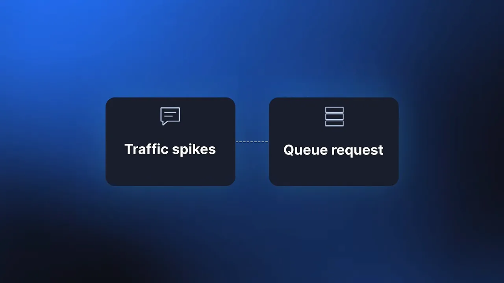
최신성: 문서가 바뀌면 인덱스도
도움말 문서는 바뀌어요. 그래서 수집 주기를 정하거나, 변경을 스스로 감지하는 수집 파이프라인을 둬요. 슬라이드의 상자 네 개가 그 순서예요. 변경 감지, 내용 다시 파싱, 임베딩 다시 만들기, 인덱스 갱신이에요. 이게 없으면 검색은 정확하게 했는데 가져온 문서가 낡은 상황이 생겨요.
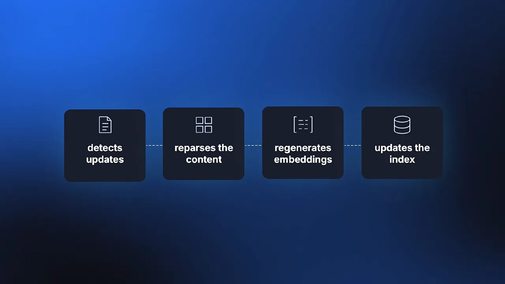
보안과 감사
마지막 축은 보안과 감사 가능성이에요. 슬라이드 목록 네 줄 그대로예요. 모든 요청에 인증과 인가, 전송 중·저장 시 데이터 암호화, 비밀값은 프롬프트와 코드 밖에, 민감한 행동에는 감사 기록이에요.
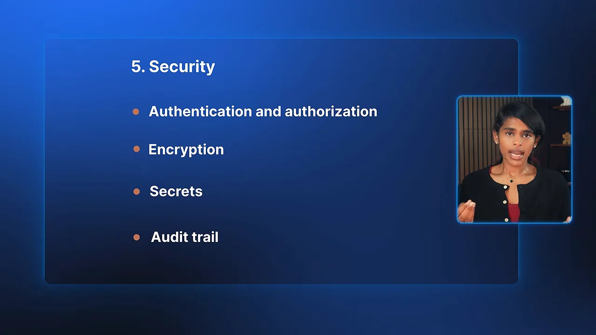
감사 기록이 답해야 할 질문은 다음 장면에 나와요. 어느 고객이 이 요청을 일으켰는지, 에이전트가 어떤 정보에 접근했는지, 어떤 도구를 불렀는지예요. 말로는 하나가 더 있어요. 위험한 행동을 누가 승인했는지예요.
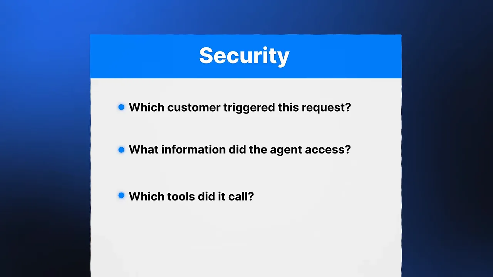
5층: 최적화
마지막 층은 이상한 상황이나 예외를 봤을 때 아키텍처를 어떻게 다듬는지예요. 발표자는 이 층을 특히 면접을 위해 만들었다고 해요. 면접관은 설계 결정과 아키텍처 트레이드오프를 얼마나 이해하는지에서 신호를 찾고, 이 층이 좋은 지원자와 훌륭한 지원자를 가른다고 봐요.
최적화는 이미 동작하는 기본 시스템을 실제로 보이는 패턴과 문제에 맞춰 개선하는 일이에요. 흔한 축은 지연, 비용, 품질, 특정 실패 패턴 네 가지예요. 면접에서는 보통 이 중 하나가 문제로 주어지고, 맞는 최적화를 골라야 해요.
지연: 어디가 느린지에 따라 달라요
검색이 느리면 더 빠른 인덱스, 후보 수 줄이기, 가벼운 리랭커를 써요. 모델 호출이 시간을 대부분 먹으면 같은 평가 기준을 지키는 더 작은 모델로 옮겨요. 슬라이드는 세 번째 경우, 도구가 느린 경우를 그려요. 아키텍처 그림의 Tools 상자에서 선을 뽑아 '불필요한 호출 빼기'와 '독립적인 도구 호출은 병렬로'를 달아요.
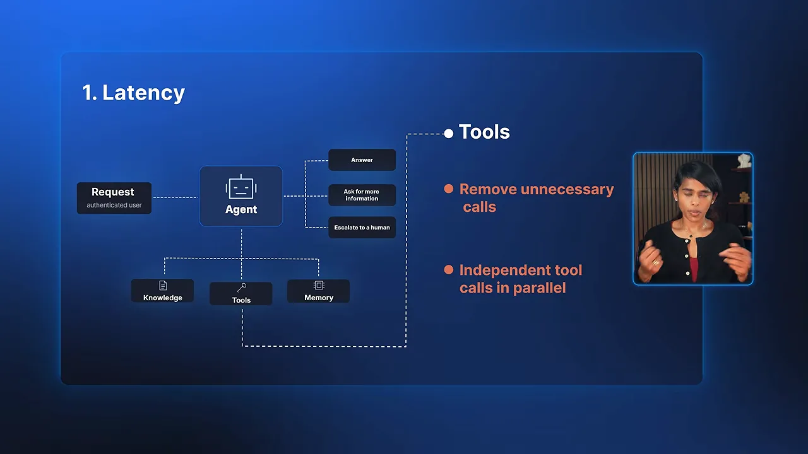
비용: 라우팅과 두 가지 캐싱
시스템은 잘 도는데 비용을 줄여야 할 때예요. 첫째는 모델 라우팅이에요. 쉬운 요청은 작은 모델로 보내고, 큰 모델은 복잡한 요청에만 써요. 둘째는 프롬프트 캐싱이에요. 슬라이드의 'System instructions'와 'Tool'이 그 대상이에요. 매번 같은 시스템 지시문과 도구 정의를 재사용해서 요금을 훨씬 덜 내요.
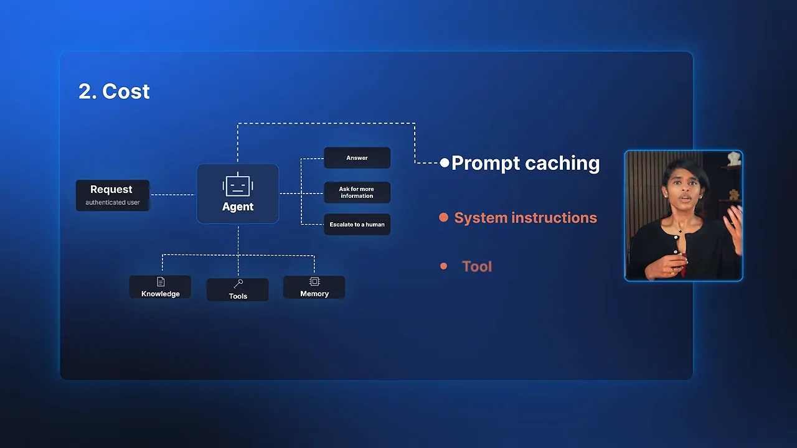
셋째는 시맨틱 캐싱이에요. 슬라이드 두 줄이 조건과 결과예요. 아주 비슷한 질문이 들어오면(Very similar question), 이전 결과를 재사용해요(Reuse a previous result). LLM을 아예 다시 부르지 않고 앞서 만든 답을 고객에게 돌려줘요.
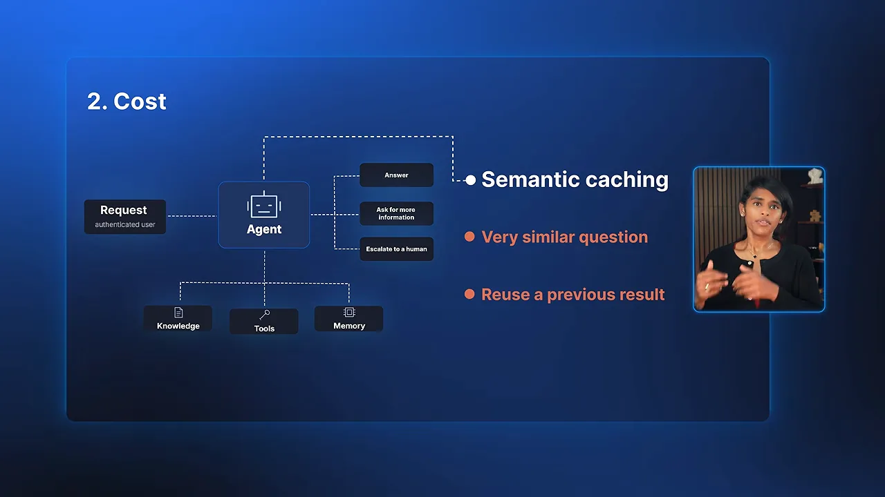
품질: 모델이 병목일 때만 모델을 바꿔요
평가가 품질 부족을 보여 주면 먼저 어디서 품질을 잃는지 찾아요. 특정 요청 유형에서 모델이 약할 수도 있고, 도구 흐름 자체를 바꿔야 할 수도 있어요. 더 강한 모델로 바꾸는 건 선택지 중 하나지만, 모델이 병목일 때만이에요.
특정 실패 패턴: 전문 에이전트는 그때 들여요
지원 범위가 결제, 반품, 계정 보안, 기술 문제 해결로 넓어졌다고 해 봐요. 에이전트 하나가 너무 많은 컨텍스트와 도구를 떠안아요. 슬라이드는 이때 Agent 옆에 Specialist agents를 달고, 그 아래에 그 네 분야를 적어요. 오케스트레이터 뒤에 전문 에이전트를 두는 구조가 이제야 복잡도를 감당할 만한 값을 해요.
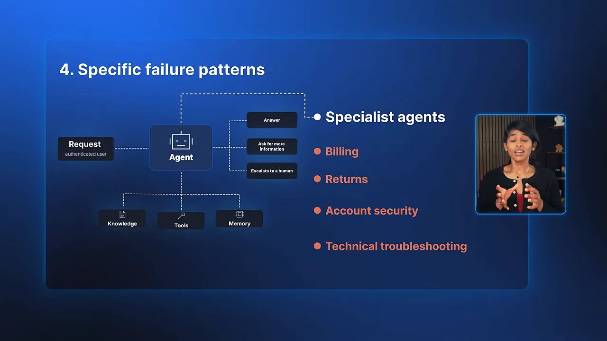
Every complexity has to be earned, and you need to explain why you made those decisions.
모든 복잡도는 그만한 이유가 있어야 하고, 왜 그렇게 정했는지 설명할 수 있어야 해요.
— 영상 19:14
발표자는 이 고객 지원 아키텍처를 외우지 말라고 해요. 층마다 던진 질문을 들고 다른 사례에 적용해 처음부터 끝까지 연습하는 게 핵심이라고 마무리해요.